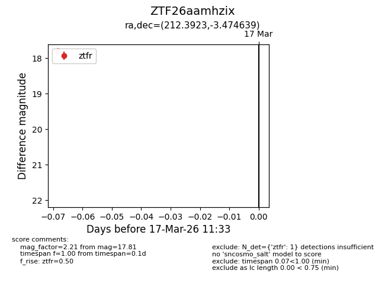
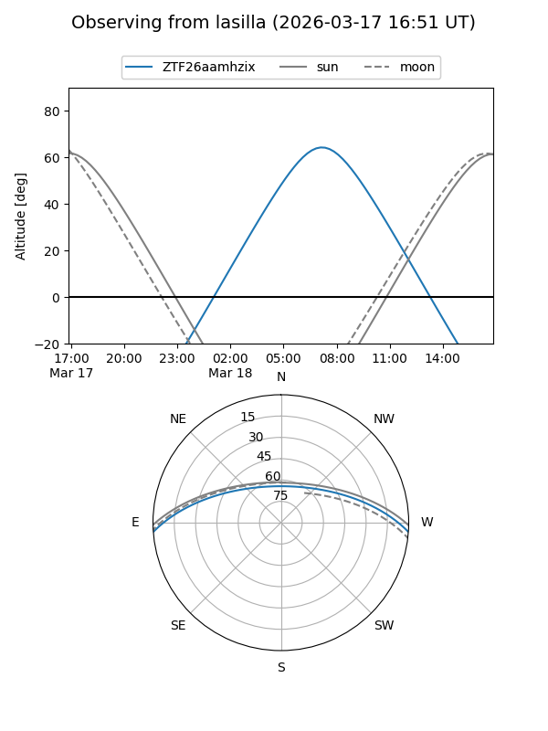
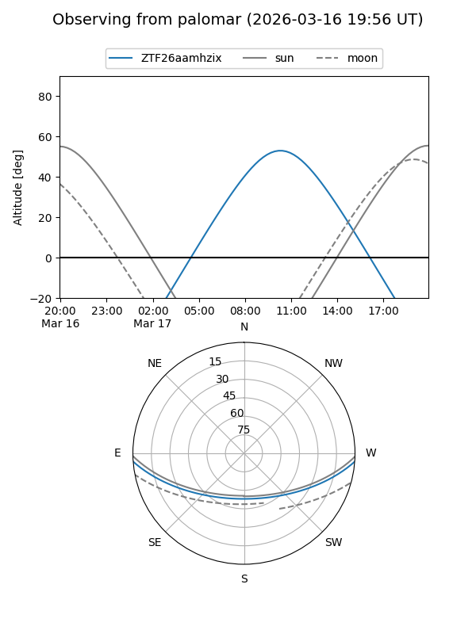

ZTF26aamhzix
Target ZTF26aamhzix at 2026-03-17 11:35
Aliases and brokers:
FINK: link
Lasair: link
ALeRCE: link
alt names
ZTF26aamhzix (ztf,fink_ztf)
Coordinates:
equatorial (ra, dec) = 212.3923,-3.47464
equatorial (HMS+DMS) = 14:09:34.15,-03:28:28.70
galactic (l, b) = (337.5807,+54.05608)
Flags:
Photometry:
last ztfr=17.81
1 ztfr detections
Lightcurve

Visibility


Additional plots